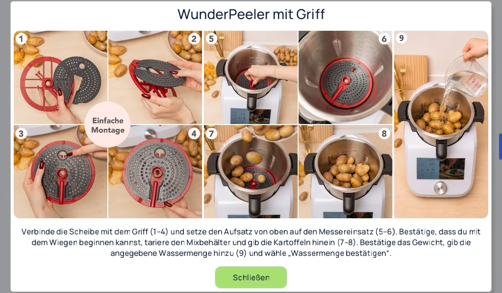
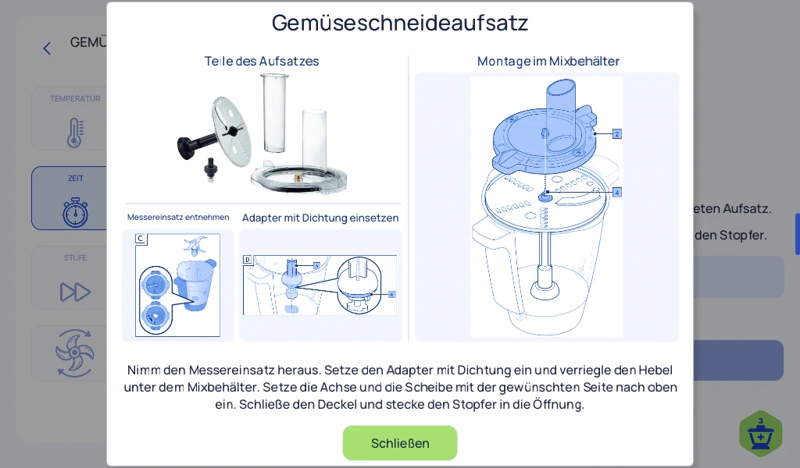
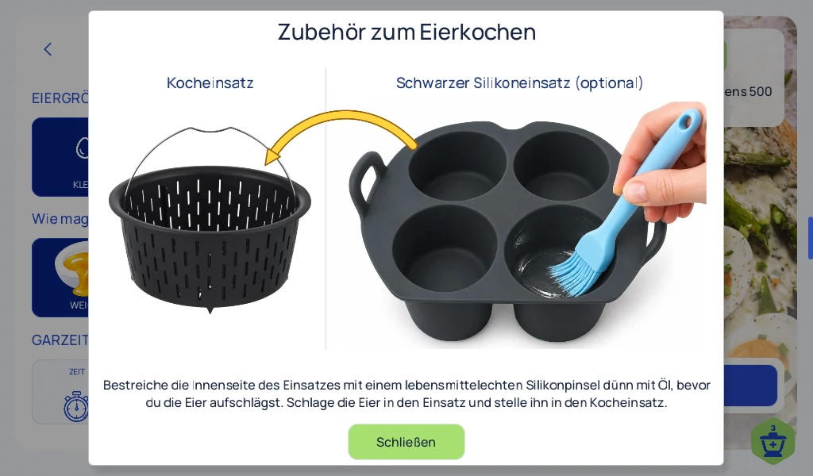
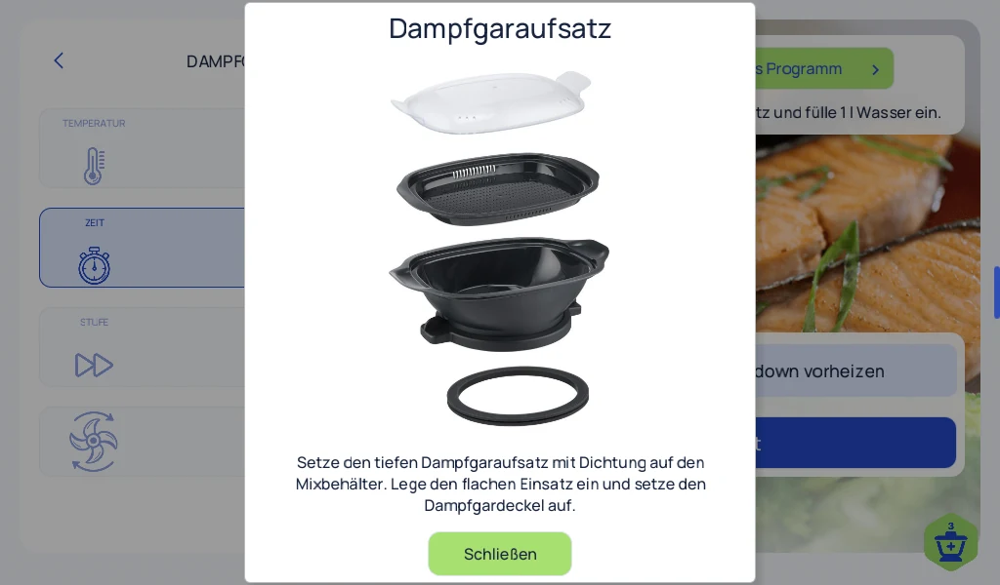
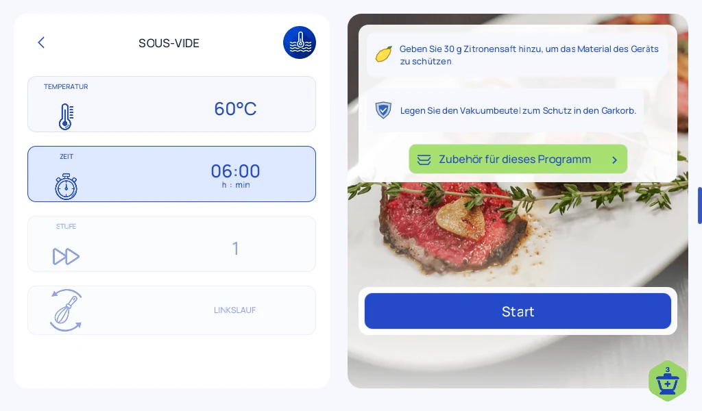
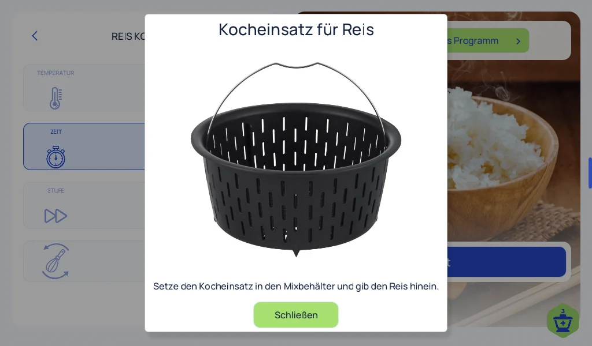
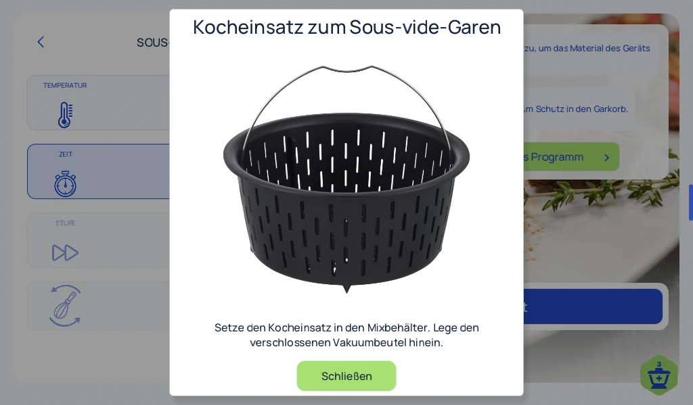
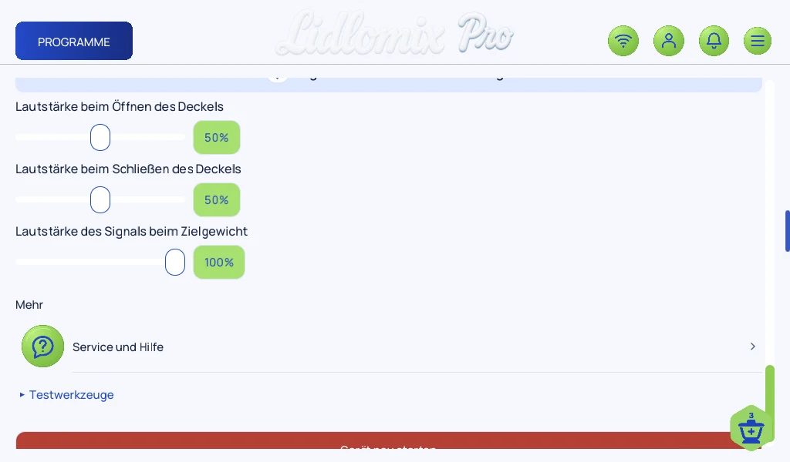
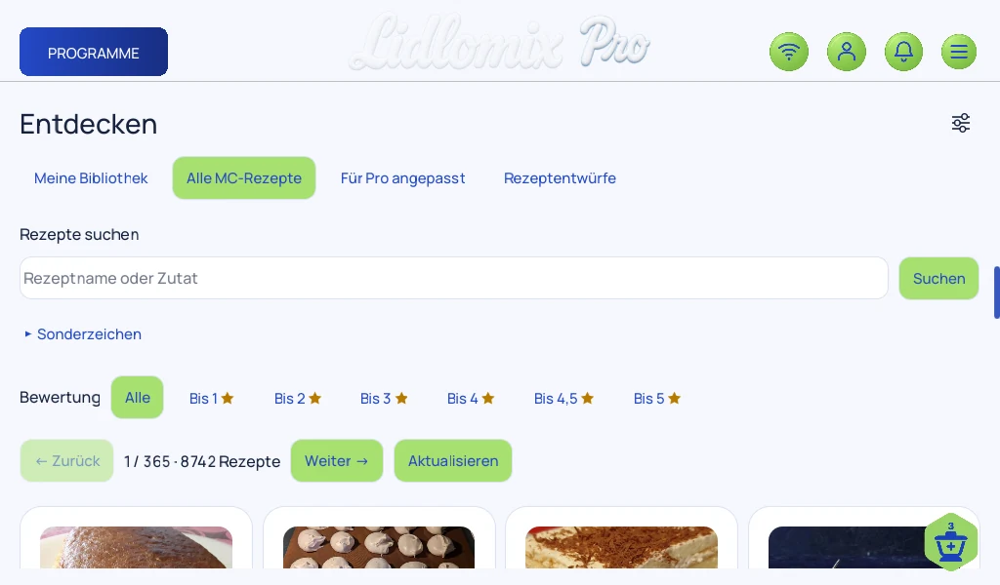
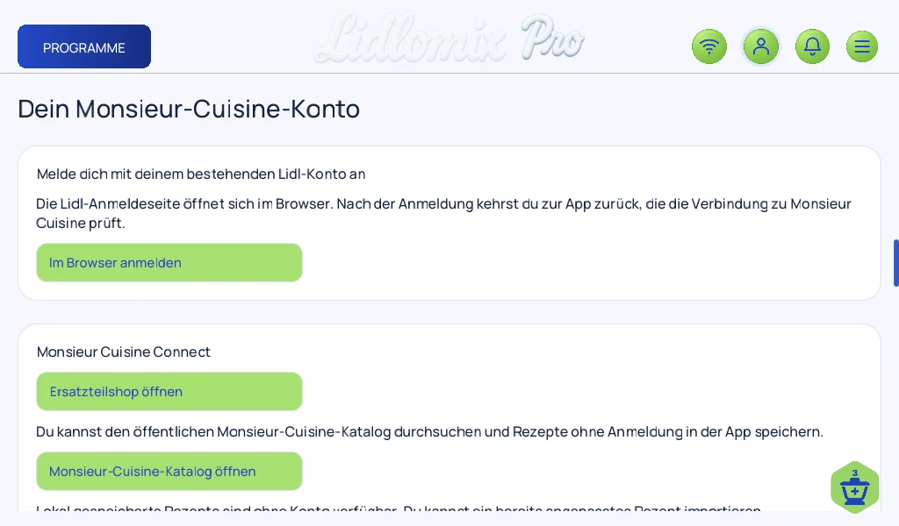

Monsieur Cuisine Connect
Von 0.17.8 bis 0.19.1
Nachfolgende Versionen brachten Kartoffelschalen mit Wiegen, Anweisungen zur Montage von Zubehör und Aktualisierungen der Rezeptdatenbank über das Internet. Nachfolgend finden Sie die Tropfen von Connect, die neuesten Zubehörgrafiken und eine Liste von Änderungen in einzelnen Versionen.
Kartoffelschalen und Tooltips in Programmen
Im Schälprogramm wartet die Waage, bis du bestätigst, dass alles bereit ist. So bleibt Zeit, den WunderPeeler von oben auf das Messer zu setzen. Nach dem Tarieren des Mixbehälters bestätigst du zuerst das Gewicht der Kartoffeln und dann die Menge des hinzugefügten Wassers. Der bestätigte Wert bleibt sichtbar, während du den Behälter schließt. Die aktuelle Anleitung hat neun Bilder und zeigt zum Schluss das Einfüllen des Wassers.

Die Accessories-Schaltfläche für dieses Programm öffnet die Anweisungen für das ausgewählte Programm. Der Schneidadapter hat eine Ansicht der Elemente und ein blaues Montageschema in der Schüssel. Die standardmäßige Schnittzeit beträgt eine Minute. Beim Kochen von Eiern können Sie Körbe und optionale schwarze Silikonpatrone sehen. Der gelbe Pfeil zeigt an, wo die Form gelegt werden soll, und die Illustration erinnert daran, sie vor dem Einsetzen der Eier zu ölen.




Dampfen zeigt ein weiteres Element des Dampfens. Kochen Reis und Sous-Video zeigen Körbe. In Sous-Video bedeutet der Schild eine Empfehlung, den Vakuumbeutel im Korb zu sichern, und die gelbe Zitrone unterscheidet den Hinweis, 30 g Zitronensaft hinzuzufügen.








Gewichtssignal, Heizung und Waschen
Die Schalleinstellungen wurden von dem Öffnungs- und Schließvolumen des Deckels und dem separaten Volumen des Signals begleitet, um die gewünschte Masse zu erreichen. Die nächste Änderung stärkt die Gewichtssignaldatei selbst. Bei der Warmwasserbereitung verwendet der Connect-Controller eine Heizungseinstellung von 120 °C, um das 100 °C-Ziel schneller zu erreichen. Die Temperaturmessung bleibt am Ende des Programms sichtbar.
Bei der kurzen und langen Reinigung wachsen die Rotationen allmählich auf die vorgeschriebene Geschwindigkeit, um eine Stufe alle halbe Sekunde. Vor dem Richtungswechsel muss das Blatt mindestens drei Sekunden lang bremsen. Die Schmetterlingsbildnachricht erscheint im Waschprogramm, in Smoothie, im Mischen am Püree und mit Geschwindigkeiten von 5-10 in eigenen Einstellungen.



Verzeichnis und Updates über das Internet
Auf der Katalogseite verwenden alle MC-Rezepte die Fabrikquelle. Der benutzerdefinierte Pro verfügt über ein separates Verzeichnis, an das Updates von Rezepten und Fotos gesendet werden. Sie können von einer heruntergeladenen Datenbank zu einem eingebauten Verzeichnis wechseln. Meine Namen haben Filter "Alle", "Hintergründe" und "Erstellt".

Das Update-Menü trennt die Regelbasis von der Roboteranwendung. Beim herunterladen zeigt es den prozentsatz an, und beim checken und auspacken zeigt es den stufennamen an. Die Schaltfläche "Updates überprüfen" ist mit den anderen Feldern ausgerichtet. Bei Connect habe ich überprüft, ob ich eine stabile Revision der Datenbank herunterladen und zur Nachricht "Katalog verifiziert" gehen möchte. Die Installation der Vorschriften wird vom Benutzer bestätigt. Während dieses Tests stand ein Update der Datenbank in einem stabilen Kanal zur Verfügung.

Einstellungen, Firefox und Ersatzteile
Die Einstellungen erhielten größere Symbole im Kachelstil auf dem Programmbildschirm. Wi-Fi-Symbole, Konten, Updates und Menüs in der oberen Leiste sind kleiner. Auf der linken Seite schaltet der Button weiterhin "Programme" und "Provisionen". Der zusätzliche umgekehrte Pfeil wurde entfernt.
Die Anmeldeschaltfläche für das Konto von Monsieur Cuisine startet das Lidl-Anmeldeformular direkt in Firefox. Auf dem gleichen Bildschirm führt der Button „Shop mit Ersatzteilen öffnen zur Kategorie Connect im Monsieur Cuisine Store. Auf dem Gerät überprüfte ich die Öffnung beider Seiten.

Liste der Änderungen ab 0.17.8
- 0.17.8 — Standard-Tap-Volumen von 10%. Früherer Eintrag und Drop.
- 0.17.9 — das erste Kartoffelschälprogramm mit WunderPeeler-Wiege-, Führungs- und Stützbildschirm.
- 0.18.0 — Reihenfolge der Kopfzeilen und Felder in Gemüse Schälen und Schneiden Programme.
- 0.18.1 — Testversion des Schälens mit automatischer Richtungsänderung während des Zyklus.
- 0.18.2 — Änderung in der ersten Phase des Prüfzyklus.
- 0.18.3 — erste Zusammenstellung mit zusätzlichen Lid-Sounds und Massenleistung.
- 0.18.4 — separate Volumenschieber zum Öffnen des Deckels, Schließen des Deckels und Gewichtszunahme.
- 0.18.5 – passen Sie die Sounds an und prüfen Sie, ob die Lautstärkeeinstellungen nach dem Update gespeichert sind.
- 0.18.6 — die erste Version des Roboters mit einem Internet-Update-Bildschirm und Beta-Kanal-Unterstützung.
- 0.18.7 — Versuchen Sie, ein Testupdate des Fotoverzeichnisses herunterzuladen und zu öffnen.
- 0.18.8 — Versucht, die Datenbank zu inkrementieren und ein verifiziertes Update an das Android-Installationsprogramm zu übermitteln.
- 0.18.9 — die beiden Rezeptquellen Alle MC-Rezepte und Für Pro angepasst wurden getrennt.
- 0.19.0 — eine separate Ansicht von „Meine Namen und ihre Filter in Customized Pro.
- 0.19.1 — der Übergang des Upgrade-Clients zu einem stabilen Kanal und der Versuch eines echten Basispakets auf Connect.
- Spätere Zusammenstellung 0.19.1 - Bestätigung des Wiegens beim Schälen, Heizen und Waschen, Zubehörgrafiken, Schmetterlingswarnungen, aktualisierte Symbole, Anmeldung in Firefox, Teilespeicher und Aktualisierungsleiste.
Zurück zur Aktualisierung der Historie · Teilen Sie Ihre Kommentare im Forum